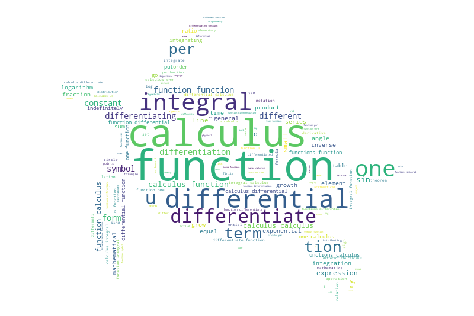

This plot is aiming for creating an e-reader that analyze text difficulty based on concepts in the book (in this case: Calculus made easy!) I used custom theme for formatting the text title, axes labels, tick labels. Include font sizes for different texts. The fuzzy matching of text content is done with an extra layer of splitting the concept term into words and matching each concept word with the text content and only approves the concept when the matched indices are within the vinicity of each other.
The wordcloud is plotted with stopwords filtered out and mask chosen with the turtle image to show the long lasting value of Calculus and Math. The text is further filtered by fuzzy matching with the selected terms in Calculus, so terms like X, Y that show up in the text a lot can be filtered out. The final result present a very well organized overview of what the terms in Calculs Made Easy is like.